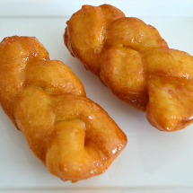

Koeksisters

Description
A sweet South African heritage delicacy - crisp pastry plaits are fried and dipped in an aromatic syrup!
Pastries similar to these originated centuries ago in Batavia in the East
and the recipe brought to South Africa by the Malayan settlers together with many others.
The syrup needs to be made in advance and chilled overnight. Submersing the hot fried koeksisters in ice cold syrup
ensures optimal absorption. A fresh koeksister, still slightly warm and dripping of syrup is an unforgettable experience,
but if not used on the day of making it is best to freeze for later use and serve straight from the freezer.
Ingredients
Syrup
- 4 cups (1 litre) Chelsea White Sugar
- 2 1/2 cups (625ml) water
- 1 cinnamon stick
- 1x2,5cm piece fresh root ginger
- 1 tbsp (15ml) lemon juice
- 1/2 tsp (2,5ml) cream of tartar
- 1/2 tsp glycerine (optional for extra shiny koeksisters)
Dough
- 4 cups (4 x 250ml) High grade flour
- 1/2 tsp (2,5ml) salt
- 4 tsp (20ml) baking powder
- 1 Tbsp (15ml) sugar
- 1/4 cup (60ml) butter
- 2 eggs
- 1/2 cup (125ml) milk
- 1/2 cup (125ml) water
oil for frying (sunflower or canola)
Steps
- Place the ingredients for the syrup into a saucepan and stir over moderate heat
until the sugar has melted. Bring to boil and boil 1 minute. Reduce heat and
simmer 10 minutes. Allow to cool and chill overnight to make the syrup ice cold.
- Combine the dry ingredients for the dough and rub in the butter until
the mixture resembles coarse crumbs. Beat together the eggs and milk,
add to the dry ingredients and mix with a fork, adding as much of the water as necessary
to make a soft dough (similar to scone dough).
- Turn out the dough on a floured surface and knead very gently for
2-3 minutes until smooth. Return to the bowl, cover and chill for at least
30 minutes or several hours.
- Roll out the dough on a lightly floured surface to a rectangular shape and about
0.5cm thick. Cut lengthwise into strips about 4cm wide and then crosswise into rectangles about
8cm long. Keeping about 1cm at the top end of each rectangle intact,
cut it into three strips. Plait the strips very loosely to allow for rising while
frying and press the ends together well to seal neatly.
Set aside on a tray until all the plaits are made and cover with a damp cloth.
- Divide the syrup into two bowls - use the first bowl until
the syrup starts to warm up and then use the second bowl.
Return the first bowl with syrup to the freezer to chill again.
- Pour enough oil into a medium sized saucepan to come 5cm up the sides of the pan and heat
the oil to moderately hot (170 º C). Fry the koeksisters a few at a time until golden on both sides.
Lift out with a perforated spoon and place into the ice-cold syrup
Press down lightly for about 30 seconds and lift out with a fork or tongs. Take care not to
use the same implements in the oil and syrup. Place onto a cooling rack set over a plate or
tray to catch up the syrup that will drain off for it may be necessary to re-use it at the end.
Repeat until all the koeksisters are fried and dipped.
Serve as a special treat for dessert or with tea or coffee. Delicious!